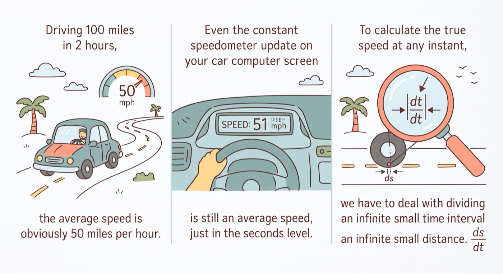
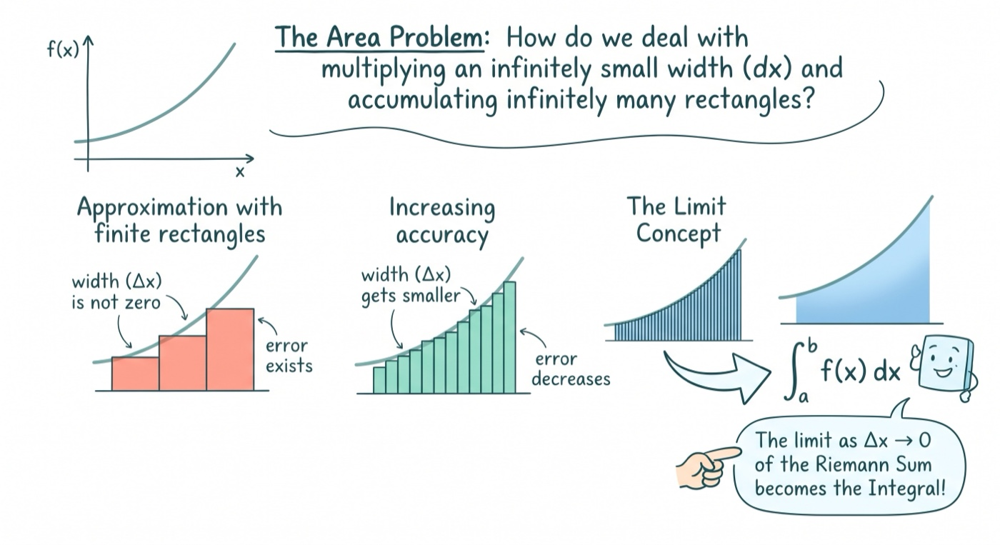
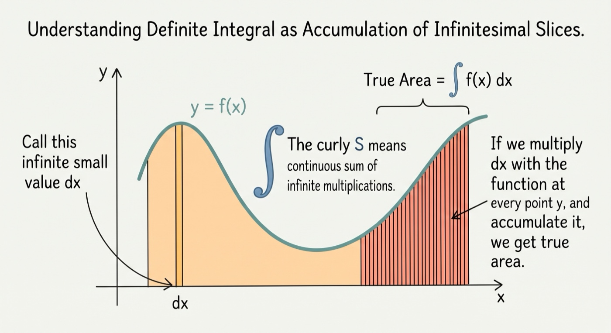
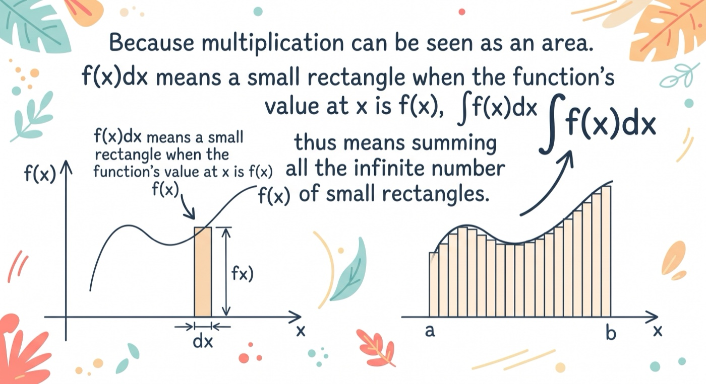
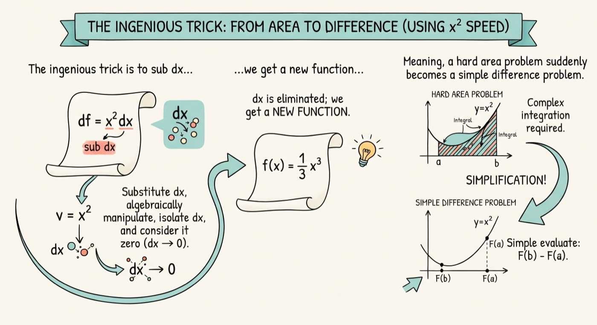
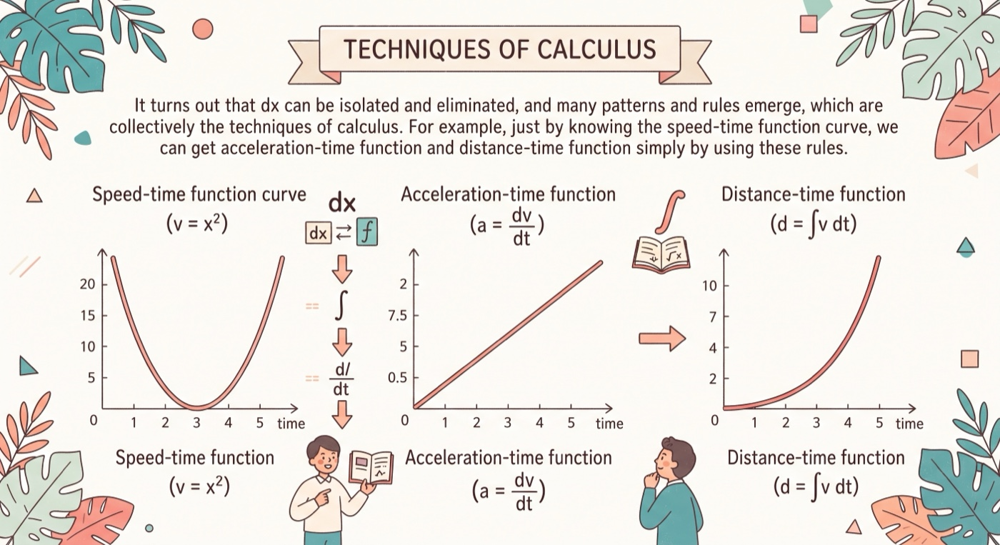

Calculus Simply Explained with Illustrations | Sailin' N Voyages Series, Ep. 4
Other possible titles:
- Calculus in eli5-style simple summary words
- Calculus reduced to even simpler words
- Calculus made simple
Calculus Simply Explained with Illustrations
1 Driving 100 miles in 2 hours, the average speed is obviously 50 miles per hour. Even the constant speedometer update on your car computer screen is still an average speed, just in the seconds level. To calculate the true speed at any instant, we have to deal with dividing an infinite small time interval by an infinite small distance.
2 The area under a smooth curve can be approximated by accumulating small rectangles, the result gets increasingly accurate as the base of the rectangle approaches infinitely small, but how do we deal with multiplying an infinite small width and then accumulate infinite rectangles.
3 Call this infinite small value dx. The curly S means continuous sum of infinite multiplications. If we multiply dx with the function at every point y, and accumulate it, we get true area.
4 Because multiplication can be seen as an area. f(x)dx means a small rectangle when the function's value at x is f(x), ∫f(x)dx thus means summing all the infinite number of small rectangles.
5 The ingenious trick is to sub dx in an algebra equation and then algebraically manipulate it - meaning change the equation in form until dx can be isolated and considered to be zero. Once dx is eliminated, we actually get a new function on which a simple difference is the area we wanted to accumulate. Meaning, a hard area problem suddenly becomes a simple difference problem.
6 It turns out that dx can be isolated and eliminated, and many patterns and rules emerge, which are collectively the techniques of calculus. For example, just by knowing the speed-time function curve, we can get acceleration-time function and distance-time function simply by using these rules.